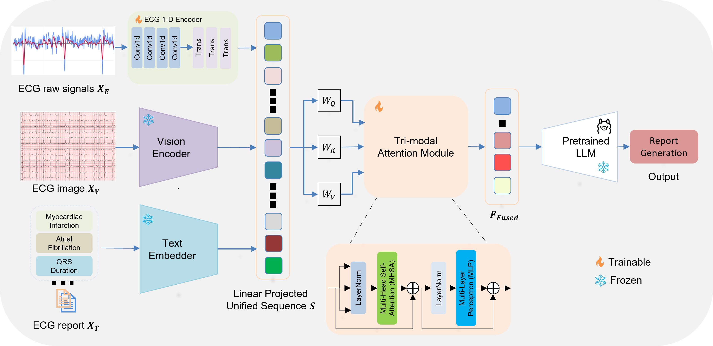

Quick Access
Conference poster materials, paper, references, and contact information for the AIME short paper.
Paper PDF Poster PDF ReferencesTri-modal ECG signal, Computer Vision, and LLM for automatic ECG report generation
Nanyang Technological University, Singapore
Conference poster materials, paper, references, and contact information for the AIME short paper.
Paper PDF Poster PDF ReferencesWe align raw ECG signals, visualized ECG images, and clinical text through a shared multimodal attention module.
LLaVA-Next + Mistral-Nemo achieves the strongest overall natural language generation scores.
Aggregate result chartFor questions, collaboration, or follow-up discussion:
Dr. Hong Duc Nguyen
hongduc.nguyen@ntu.edu.sg
The proposed framework combines ECG signal, ECG image, and clinical text into a unified sequence for multimodal fusion and LLM-based report generation.
